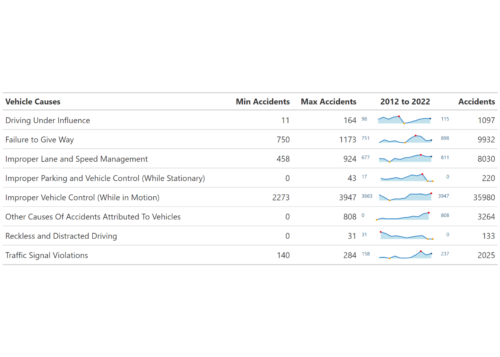
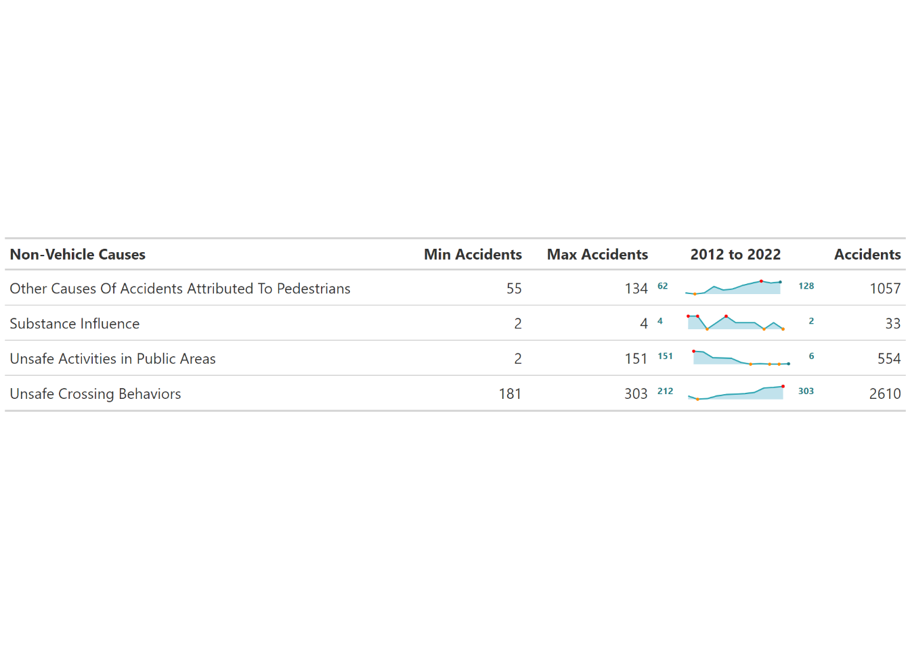

# Function to install and load a package
install_and_load <- function(package) {
if (!requireNamespace(package, quietly = TRUE)) {
install.packages(package)
}
library(package, character.only = TRUE)
}
# List of required packages
required_packages <- c("readr", "dplyr", "tidyverse", "gridExtra", "grid", "gt", "gtExtras", "sparkline", "patchwork", "png")
# Install and load required packages
for (pkg in required_packages) {
install_and_load(pkg)
}Traffic Accidents Singapore Data Preparation
Team CSC3007 P1 Lawngreen
1 Preparation of Data for Traffic Accidents Singapore
1.1 Required packages
1.2 Original Data Import
# Import the dataset
original_dataset <- read.csv("../data/original_dataset.csv", skip = 10)
colnames(original_dataset) [1] "Data.Series" "X2022" "X2021" "X2020" "X2019"
[6] "X2018" "X2017" "X2016" "X2015" "X2014"
[11] "X2013" "X2012" 1.3 Clean Data
# Convert column headers to character type
colnames(original_dataset) <- as.character(colnames(original_dataset))
# Remove the 'X' from column headers
colnames(original_dataset) <- gsub("X", "", colnames(original_dataset))
# Change the column header name for the first column
colnames(original_dataset)[1] <- "Category"
# Convert everything from row 1, column 2 onwards to double
original_dataset <- original_dataset |>
mutate(across(-1, as.double))
# Select rows up to row 123 (Skipped 9 rows, 121 - 9 = 112) and remove original combined rows
original_dataset <- original_dataset[1:112,]
# Change NA to 0
original_dataset[is.na(original_dataset)] <- 0
# Removing fatal rows
original_dataset <- original_dataset[-c(1:53),]1.4 Row Extraction
# Extract specific rows to combine
extract_rows <- function(dataset, row_indices_list) {
extracted_rows <- lapply(row_indices_list, function(rows) dataset[rows, ])
return(extracted_rows)
}
veh_rows_indices <- list(
veh1 = c(2:23, 26:34),
veh2 = c(2, 8, 9, 11, 13, 14, 31, 32),
veh3 = c(3, 15, 16),
veh4 = c(4, 30),
veh5 = c(5, 10, 12, 17, 22, 23, 33),
veh6 = c(6, 7, 18, 26),
veh7 = c(19, 20, 28),
veh8 = c(21, 27, 29),
veh9 = c(34)
)
ped_rows_indices <- list(
ped1 = c(24, 25, 36:45, 47:55),
ped2 = c(24, 37, 38, 39, 40, 48, 49, 50, 52),
ped3 = c(25, 36, 41, 44, 47, 51, 54),
ped4 = c(42, 43, 53),
ped5 = c(45, 55)
)
veh_rows <- extract_rows(original_dataset, veh_rows_indices)
ped_rows <- extract_rows(original_dataset, ped_rows_indices)1.5 Create Char Columns
# Define the first column data
veh_first_columns <- c(
"Injury Accidents Attributed To Vehicles",
"Improper Lane and Speed Management",
"Traffic Signal Violations",
"Driving Under Influence",
"Failure to Give Way",
"Improper Vehicle Control (While in Motion)",
"Reckless and Distracted Driving",
"Improper Parking and Vehicle Control (While Stationary)",
"Other Causes Of Accidents Attributed To Vehicles"
)
ped_first_columns <- c(
"Injury Accidents Attributed To Non-Vehicles (Pedestrians, Cyclists, PMD)",
"Unsafe Crossing Behaviors",
"Unsafe Activities in Public Areas",
"Substance Influence",
"Other Causes Of Accidents Attributed To Pedestrians"
)1.6 Create Sum Columns
# Sum the numeric columns
sum_numeric_columns <- function(rows_list) {
combined_numerics <- lapply(rows_list, function(rows) colSums(rows[2:ncol(rows)]))
return(combined_numerics)
}
veh_combined_numerics <- sum_numeric_columns(veh_rows)
ped_combined_numerics <- sum_numeric_columns(ped_rows)1.7 Combine Char and Sum Columns
# Combine character column with summed numeric columns
combine_columns <- function(first_column, combined_numerics) {
combined_data <- lapply(seq_along(first_column), function(i) {
data.frame(first_column[i], t(combined_numerics[[i]]))
})
return(do.call(rbind, combined_data))
}
veh_data <- combine_columns(veh_first_columns, veh_combined_numerics)
ped_data <- combine_columns(ped_first_columns, ped_combined_numerics)1.8 Rename Columns
# Rename the columns
rename_columns <- function(data, original_headers) {
colnames(data)[1] <- original_headers[1]
return(data)
}
veh_data <- rename_columns(veh_data, colnames(original_dataset))
ped_data <- rename_columns(ped_data, colnames(original_dataset))1.9 Combine All Data
# Combine data
combine_all_data <- function(veh_data, ped_data, original_headers) {
final_data <- rbind(veh_data, ped_data)
colnames(final_data) <- original_headers
return(final_data)
}
finalData <- combine_all_data(veh_data, ped_data, colnames(original_dataset))
# Print final data
finalData Category
1 Injury Accidents Attributed To Vehicles
2 Improper Lane and Speed Management
3 Traffic Signal Violations
4 Driving Under Influence
5 Failure to Give Way
6 Improper Vehicle Control (While in Motion)
7 Reckless and Distracted Driving
8 Improper Parking and Vehicle Control (While Stationary)
9 Other Causes Of Accidents Attributed To Vehicles
10 Injury Accidents Attributed To Non-Vehicles (Pedestrians, Cyclists, PMD)
11 Unsafe Crossing Behaviors
12 Unsafe Activities in Public Areas
13 Substance Influence
14 Other Causes Of Accidents Attributed To Pedestrians
2022 2021 2020 2019 2018 2017 2016 2015 2014 2013 2012
1 5395 5087 3919 4699 4483 4724 6085 6534 6665 6274 6816
2 677 661 458 690 615 733 770 876 924 815 811
3 158 160 140 186 147 144 154 207 284 208 237
4 98 144 100 148 164 11 31 64 103 119 115
5 751 918 812 864 765 750 1012 1173 1123 866 898
6 3663 2999 2273 2651 2656 2832 3796 3764 3821 3578 3947
7 31 24 12 14 10 5 9 13 15 0 0
8 17 11 16 22 14 26 38 33 43 0 0
9 0 170 108 124 112 223 275 404 352 688 808
10 429 384 328 389 376 340 346 378 426 419 439
11 212 181 187 212 225 230 234 246 288 292 303
12 151 144 77 73 68 21 2 8 2 2 6
13 4 4 2 3 4 3 3 3 2 3 2
14 62 55 62 101 79 86 107 121 134 122 1281.10 Output Cleaned Data
# Save the modified data frame to a new CSV file
write.csv(finalData, "../data/cleaned_dataset.csv", row.names = FALSE)2 Visualizing of Data for Traffic Accidents Singapore
2.1 Cleaned Data Import
# Import the dataset
cleaned_dataset <- read.csv("../data/cleaned_dataset.csv")
colnames(cleaned_dataset) [1] "Category" "X2022" "X2021" "X2020" "X2019" "X2018"
[7] "X2017" "X2016" "X2015" "X2014" "X2013" "X2012" 2.2 Extract Data
# Function to extract data
extract_data <- function(dataset, category) {
dataset |> filter(Category == category)
}
# Use the function to extract data
vehicle_accidents <- extract_data(cleaned_dataset, "Injury Accidents Attributed To Vehicles")
non_vehicle_accidents <- extract_data(cleaned_dataset, "Injury Accidents Attributed To Non-Vehicles (Pedestrians, Cyclists, PMD)")
print(vehicle_accidents) Category X2022 X2021 X2020 X2019 X2018 X2017
1 Injury Accidents Attributed To Vehicles 5395 5087 3919 4699 4483 4724
X2016 X2015 X2014 X2013 X2012
1 6085 6534 6665 6274 6816print(non_vehicle_accidents) Category
1 Injury Accidents Attributed To Non-Vehicles (Pedestrians, Cyclists, PMD)
X2022 X2021 X2020 X2019 X2018 X2017 X2016 X2015 X2014 X2013 X2012
1 429 384 328 389 376 340 346 378 426 419 4392.3 Transform Data
# Function to transform data
transform_data <- function(data, years, is_vehicle = TRUE) {
if (is_vehicle) {
tibble(
Year = years,
Accidents = as.numeric(data[1, 2:12])
)
} else {
tibble(
Year = years,
Accidents = as.numeric(data)
)
}
}
# Extract the years from the column names
years <- as.numeric(sub("X", "", names(cleaned_dataset)[2:12]))
# Use the function to transform data
vehicle_data <- transform_data(vehicle_accidents, years, TRUE)
non_vehicle_data <- transform_data(non_vehicle_accidents[1, 2:12], years, FALSE)
# Print data to verify
print(vehicle_data)# A tibble: 11 × 2
Year Accidents
<dbl> <dbl>
1 2022 5395
2 2021 5087
3 2020 3919
4 2019 4699
5 2018 4483
6 2017 4724
7 2016 6085
8 2015 6534
9 2014 6665
10 2013 6274
11 2012 6816print(non_vehicle_data)# A tibble: 11 × 2
Year Accidents
<dbl> <dbl>
1 2022 429
2 2021 384
3 2020 328
4 2019 389
5 2018 376
6 2017 340
7 2016 346
8 2015 378
9 2014 426
10 2013 419
11 2012 4392.4 Create Sparklines
# Display the sparklines
sparkline(vehicle_data$Accidents, type = "line", width = "100%", height = "100px")sparkline(non_vehicle_data$Accidents, type = "line", width = "100%", height = "100px")2.5 Plot Overview Graph
# Function to create plot
create_plot <- function(data, title, line_color, point_color) {
ggplot(data, aes(x = Year, y = Accidents)) +
geom_line(color = line_color) +
geom_point(color = point_color) +
scale_x_continuous(breaks = unique(data$Year)) +
scale_y_continuous(n.breaks = 8) +
theme_minimal() +
labs(
title = title,
x = "Year",
y = "No. of Accidents",
caption = "Source: Singapore Police Force"
) +
theme(
plot.caption = element_text(face = "italic", hjust = 1, vjust = 1, size = 12),
plot.title = element_text(face = "bold", hjust = 0.5, margin = margin(b = 10), size = 18),
axis.title.x = element_text(margin = margin(t = 10), size = 16),
axis.title.y = element_text(margin = margin(r = 10), size = 16),
axis.text.x = element_text(size = 15),
axis.text.y = element_text(size = 15)
)
}
# Use the function to create plots
vehicle_plot <- create_plot(vehicle_data, "Vehicles", "#2F81C5", "#205988")
non_vehicle_plot <- create_plot(non_vehicle_data, "Non-Vehicles (Pedestrians, Cyclists, PMD)", "#2DA5B2", "#217E88")
# Create a spacer grob
spacer <- nullGrob()
# Create the main title grob with line break and bold font
main_title <- textGrob(
bquote(atop(bold("Number of Traffic Accidents Resulting in"), bold("Injured Persons Attributed To"))),
gp = gpar(fontsize = 24)
)
# Combine the two plots side by side with spacing and add the main title
overview_plot <- arrangeGrob(
main_title,
arrangeGrob(vehicle_plot, spacer, non_vehicle_plot, ncol = 3, widths = c(1, 0.1, 1)),
ncol = 1,
heights = c(0.30, 1)
)
# Save the combined plot as an image
ggsave("images/overview_plot.png", plot = overview_plot, width = 16, height = 7, dpi = 300)
# Display the saved plot image
grid::grid.newpage()
grid::grid.raster(as.raster(png::readPNG("images/overview_plot.png")))
2.6 Identify Sub-Categories
# Identify the rows for the main categories
vehicles_keyword <- "Injury Accidents Attributed To Vehicles"
non_vehicles_keyword <- "Injury Accidents Attributed To Non-Vehicles (Pedestrians, Cyclists, PMD)"
# Find the starting indices of each category
start_vehicle <- which(cleaned_dataset$Category == vehicles_keyword)
start_non_vehicle <- which(cleaned_dataset$Category == non_vehicles_keyword)
# Determine the ending indices of each category
end_vehicle <- ifelse(length(start_non_vehicle) > 0, start_non_vehicle - 1, nrow(df))
end_non_vehicle <- nrow(cleaned_dataset)
# Extract causes for vehicles from the dataset
causes_vehicles <- cleaned_dataset[(start_vehicle + 1):end_vehicle, ] |>
filter(!grepl(non_vehicles_keyword, Category)) |>
select(Category)
# Extract causes for non-vehicles from the dataset
causes_non_vehicles <- cleaned_dataset[(start_non_vehicle + 1):end_non_vehicle, ] |>
filter(!grepl(vehicles_keyword, Category)) |>
select(Category)
print(causes_vehicles) Category
1 Improper Lane and Speed Management
2 Traffic Signal Violations
3 Driving Under Influence
4 Failure to Give Way
5 Improper Vehicle Control (While in Motion)
6 Reckless and Distracted Driving
7 Improper Parking and Vehicle Control (While Stationary)
8 Other Causes Of Accidents Attributed To Vehiclesprint(causes_non_vehicles) Category
1 Unsafe Crossing Behaviors
2 Unsafe Activities in Public Areas
3 Substance Influence
4 Other Causes Of Accidents Attributed To Pedestrians2.7 Read in Long Format
# Select relevant columns and gather into long format
df_long <- cleaned_dataset |>
gather(key = "Year", value = "Accidents", -Category) |>
mutate(Year = as.numeric(gsub("[^0-9]", "", Year)))
# Filter the data for vehicle and non-vehicle causes
df_vehicles <- df_long |>
filter(Category %in% causes_vehicles$Category)
df_non_vehicles <- df_long |>
filter(Category %in% causes_non_vehicles$Category)2.8 Sum Sub-Categories Data
# Sum the data from 2012 to 2022
summed_vehicles <- df_vehicles |>
group_by(Category) |>
summarise(Sum = sum(Accidents, na.rm = TRUE))
summed_non_vehicles <- df_non_vehicles |>
group_by(Category) |>
summarise(Sum = sum(Accidents, na.rm = TRUE))
print(summed_vehicles)# A tibble: 8 × 2
Category Sum
<chr> <int>
1 Driving Under Influence 1097
2 Failure to Give Way 9932
3 Improper Lane and Speed Management 8030
4 Improper Parking and Vehicle Control (While Stationary) 220
5 Improper Vehicle Control (While in Motion) 35980
6 Other Causes Of Accidents Attributed To Vehicles 3264
7 Reckless and Distracted Driving 133
8 Traffic Signal Violations 2025print(summed_non_vehicles)# A tibble: 4 × 2
Category Sum
<chr> <int>
1 Other Causes Of Accidents Attributed To Pedestrians 1057
2 Substance Influence 33
3 Unsafe Activities in Public Areas 554
4 Unsafe Crossing Behaviors 26102.9 Create Sparklines for Sub-Categories
# Normalize the accident data for each category
normalize_sparkline <- function(accidents) {
min_val <- min(accidents, na.rm = TRUE)
max_val <- max(accidents, na.rm = TRUE)
(accidents - min_val) / (max_val - min_val)
}
# Function to create sparklines data
create_sparkline_data <- function(df) {
df |>
group_by(Category) |>
summarise(
Sparkline = list(normalize_sparkline(Accidents)),
Min = min(Accidents, na.rm = TRUE),
Max = max(Accidents, na.rm = TRUE),
Start = first(Accidents),
End = last(Accidents),
OriginalValues = list(Accidents)
)
}
# Create sparklines data for vehicles and non-vehicles
sparklines_vehicles <- create_sparkline_data(df_vehicles)
sparklines_non_vehicles <- create_sparkline_data(df_non_vehicles)
# Print the exact sparkline values for verification
unnested_sparklines_vehicles <- sparklines_vehicles |>
unnest(cols = c(Sparkline, OriginalValues))
unnested_sparklines_non_vehicles <- sparklines_non_vehicles |>
unnest(cols = c(Sparkline, OriginalValues))2.10 Create Table
# Function to create GT table with sparklines and labels
create_gt_table <- function(data_table, category_label, spkl_palette, line_color) {
data_table |>
gt() |>
cols_label(
Category = category_label,
Min = "Min Accidents",
Max = "Max Accidents",
Sparkline = "2012 to 2022",
Sum = "Accidents"
) |>
cols_move(c("Min", "Max"), after = "Category") |>
cols_move("Sum", after = "Sparkline") |>
gtExtras::gt_plt_sparkline(
Sparkline,
type = "shaded",
label = FALSE,
palette = spkl_palette
) |>
text_transform(
locations = cells_body(columns = Sparkline),
fn = function(x) {
lapply(seq_along(x), function(i) {
paste0(
"<div style='display: flex; justify-content: space-between; color: ", line_color, ";'>",
"<span>", data_table$Start[i], "</span>",
x[i],
"<span>", data_table$End[i], "</span>",
"</div>"
)
})
}
) |>
tab_style(
style = cell_text(size = px(10)),
locations = cells_body(columns = Sparkline)
) |>
tab_style(
style = cell_text(weight = "bold"),
locations = cells_column_labels(everything())
) |>
tab_options(
table.width = pct(100)
) |>
cols_hide(columns = c(Start, End, OriginalValues))
}
# Combine summed data and sparklines for vehicles
vehicles_table <- left_join(summed_vehicles, sparklines_vehicles, by = "Category")
# Combine summed data and sparklines for non-vehicles
non_vehicles_table <- left_join(summed_non_vehicles, sparklines_non_vehicles, by = "Category")
# Define sparkline palettes and line colors
spkl_palette_vehicle <- c("#2F81C5", "#205988", "orange", "red", "lightblue")
spkl_palette_non_vehicle <- c("#2DA5B2", "#217E88", "orange", "red", "lightblue")
# Create GT tables
gt_table_vehicles <- create_gt_table(vehicles_table, "Vehicle Causes", spkl_palette_vehicle, "#205988")
gt_table_non_vehicles <- create_gt_table(non_vehicles_table, "Non-Vehicle Causes", spkl_palette_non_vehicle, "#217E88")
# Save tables as images
gtsave(gt_table_vehicles, "images/vehicle_table.png")
gtsave(gt_table_non_vehicles, "images/non_vehicle_table.png")
# Display images separately
grid::grid.newpage()
grid::grid.raster(as.raster(png::readPNG("images/vehicle_table.png")))
grid::grid.newpage()
grid::grid.raster(as.raster(png::readPNG("images/non_vehicle_table.png")))